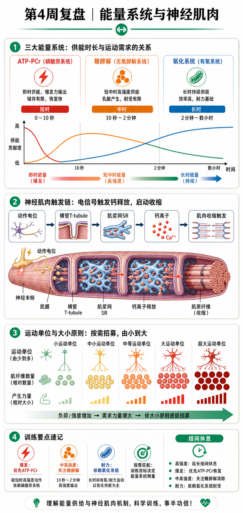

Day 28 · 第4周复盘-能量系统与神经肌肉
把三能量系统、兴奋-收缩耦联与运动单位募集串成一条训练判断链。
一句话总结
把肌肉想成一台需要“燃料、点火和执行器”的机器：能量系统决定 ATP 供给速度，E-C coupling 决定神经信号如何让肌丝开始工作，运动单位募集决定有多少执行器被叫醒。

看图顺序：先看时间轴上的主供能，再沿神经信号-钙离子-肌丝链条追踪收缩，最后看运动单位如何按大小原则募集。
核心要点
- 三能量系统始终同时工作，只是不同时间与强度下主导比例不同。底层机制
ATP-PCr 是 ATP 直接供能物质与 PCr 快速补货仓，启动最快但库存小；糖酵解把葡萄糖或肌糖原快速拆成 ATP，适合几十秒到数分钟高强度；氧化系统在线粒体内依赖氧气，速度较慢但能持续产出。
训练含义0-10 秒爆发先看 ATP-PCr；约 30 秒-2 分钟高强度先看糖酵解；2 分钟以上氧化系统占比持续上升。三者不是开关，不要把时间线当成硬边界。
- 组间休息本质是在等待 PCr、神经输出与局部环境恢复。底层机制
高强度收缩消耗 PCr，并改变钾、氢离子、无机磷与钙处理环境；神经系统也需要恢复高质量驱动。短休能提高密度，却会牺牲下一组峰值力量或速度。
训练判断最大力量和爆发通常需要 3-5 分钟或按表现延长；一般增肌可用中等休息；密度与代谢训练可接受短休。若速度、动作路径或输出明显下降，先延长休息，不要只为凑次数。
- E-C coupling指兴奋-收缩耦联：神经电信号最终变成肌丝滑动。字面意思
E 是 excitation，兴奋；C 是 contraction，收缩。大白话是“电门按下后，机械马达开始拉动”。
完整链条运动神经动作电位到达神经肌肉接头 → 乙酰胆碱释放并使肌膜去极化 → 信号沿 T 管进入肌纤维 → 肌浆网释放 Ca²⁺ → Ca²⁺ 与肌钙蛋白结合，使原肌球蛋白移开 → 肌动蛋白与肌球蛋白形成横桥并滑动。
常见误解钙离子不是从血液直接流进来才触发收缩；主要触发源是肌浆网释放。收缩结束后 Ca²⁺ 被泵回肌浆网，横桥循环才逐步停止。
- 运动单位是一个运动神经元及其支配的全部肌纤维，募集决定参与工作的纤维数量。底层机制
神经元像总开关，旗下肌纤维一起被激活。小运动单位通常纤维少、阈值低、耐疲劳；大运动单位通常纤维多、力量大、阈值高。
训练例子轻重量动作先由低阈值单位完成；负荷提高、速度要求上升或疲劳累积后，更多高阈值单位加入。肌肥大不只看重量，还要让目标肌纤维获得足够张力与有效募集。
- 大小原则通常按小到大募集，高阈值单位不会无缘无故先被叫醒。方向
从低阈值、耐疲劳的小运动单位，到高阈值、强力输出的大运动单位。考试常问的是方向：小 → 大，不是大 → 小。
训练含义重负荷、快速意图和接近力竭，都能提高高阈值单位参与概率；但高阈值不等于每组都必须极限重量。动作技术、总量与恢复仍决定实际效果。
易混点“快肌先募集”不是大小原则的默认结论。快速动作可提高神经驱动，疲劳也能让更多单位加入，但基础募集顺序仍以小到大解释。
- 三系统与训练安排由持续时长、强度和目标共同决定主导系统与休息方案。判断模板
先问一组持续多久，再问强度多高，最后问目标是峰值输出、训练量还是持续能力。单次重硬拉与短休高次数深蹲，即使动作相同，也不是同一供能重点。
HIIT 串联冲刺段会提高 ATP-PCr 与糖酵解压力；恢复段由氧化系统支持 PCr 回补与代谢处理；下一轮能否保持速度，取决于恢复是否充分。
- 收束记忆燃料供 ATP，电信号放钙，钙打开横桥，募集决定输出规模。默写
三系统持续时长：ATP-PCr 最快最短，糖酵解居中，氧化系统最久；E-C coupling：神经电信号 → 肌膜/T 管 → 肌浆网 Ca²⁺ → 肌钙蛋白 → 原肌球蛋白移开 → 横桥滑动；大小原则：小到大。
常见误区
❌很多人以为三能量系统按秒数轮流开机。✅其实三者始终并行，只是贡献比例变化。
❌很多人以为乳酸或氧气决定每一次收缩是否发生。✅横桥直接使用 ATP；氧化、糖酵解和 PCr 都是在补 ATP。
❌很多人以为钙离子来自血液、大小原则是大单位先上。✅骨骼肌收缩主要依赖肌浆网释放 Ca²⁺，募集通常小到大。
记忆口诀
“短看磷酸，中看糖；长看氧，休息补快仓。电到管，钙开门；小到大，单位加人。”
翻转卡复习
实操关联
- 爆发：用跳跃或短冲刺，观察速度下降就停组；长休保质量。
- 力量：用 3-5 次大重量组，记录每组速度与动作稳定性，不用短休硬堆疲劳。
- 增肌：中高次数接近力竭，让高阈值单位在疲劳下加入，同时保留机械张力。
- HIIT：分析每轮冲刺、恢复、再冲刺分别由哪套系统主导，并解释组间休息为何影响下一轮。
- 默写：不看资料画出“神经电信号 → Ca²⁺ → 横桥”链条，再补出大小原则方向。